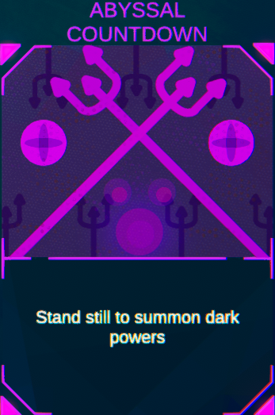

Abyssal Countdown

Abyssal Countdown is a rare card and gives the player the ability to rapidly block.
In order to do this the player must stand still for 10 seconds, however, they can still defend themselves by shooting as this does not count as moving.
This card synergises well with other block cards such as shield charge or bombs away.